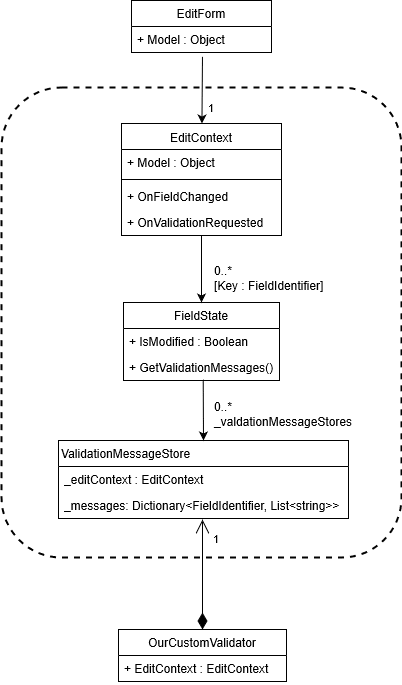

Note that, as with the section on EditContext, FieldIdentifiers, and FieldState, this is an advanced topic.
As mentioned previously, the FieldState class holds meta-state for form data. In addition to indicating whether a value has been manually edited or not, Blazor stores a collection of validation error messages. To understand how it works, this section will explain how to create our own custom validation mechanism that can be used with Blazor to validate user input.
The following UML diagram shows the relationship between an EditForm, and the various classes (grouped in the diagram) that store this meta-state. Remember, whenever EditForm.Model is altered, the EditForm will create a new instance of EditContext. The previous EditContext (which is no longer needed because it contains information about the previous model) can then be garbage collected, and with it all instances of classes that are grouped in the diagram.

Our custom validation will be based on FluentValidation. Once you've finished this section (or if you just want something you can use straight away), please have a look a blazor-validation.
Creating a validator component
Our validator component does not have to descend from any specific class in order to provide validation. It's only requirement is that it descends from the Blazor ComponentBase class so that we can add it inside the <EditForm> mark-up in our view. The purpose of embedding inside the <EditForm> mark-up is so that we can define a Cascading parameter to pick up the current EditContext that is created by the EditForm whenever its Model parameter changes.
First, create a new Blazor app and add a reference to the FluentValidation NuGet package. Then create a class called FluentValidationValidator.
public class FluentValidationValidator : ComponentBase
{
\[CascadingParameter\]
private EditContext EditContext { get; set; }
[Parameter]
public Type ValidatorType { get; set; }
private IValidator Validator;
private ValidationMessageStore ValidationMessageStore;
\[Inject\]
private IServiceProvider ServiceProvider { get; set; }
}
- EditContext
A cascading parameter that is passed to our component from its parent<EditForm>component. This will change every timeEditForm.Modelchanges. - ValidatorType
This will specify the class type to use to perform the actual validation. We will check that this is anIValidator(a FluentValidation interface). - Validator
This will hold a reference to an instance of the specifiedValidatorTypeto perform the actual object validation. - ValidationMessageStore
We will create a new one of these every time ourEditContextchanges (becauseEditForm.Modelhas changed). - ServiceProvider
An injected dependency toIServiceProviderthat we can use to create an instance ofValidatorType.
public override async Task SetParametersAsync(ParameterView parameters)
{
// Keep a reference to the original values so we can check if they have changed
EditContext previousEditContext = EditContext;
Type previousValidatorType = ValidatorType;
await base.SetParametersAsync(parameters);
if (EditContext == null)
throw new NullReferenceException($"{nameof(FluentValidationValidator)} must be placed within an {nameof(EditForm)}");
if (ValidatorType == null)
throw new NullReferenceException($"{nameof(ValidatorType)} must be specified.");
if (!typeof(IValidator).IsAssignableFrom(ValidatorType))
throw new ArgumentException($"{ValidatorType.Name} must implement {typeof(IValidator).FullName}");
if (ValidatorType != previousValidatorType)
ValidatorTypeChanged();
// If the EditForm.Model changes then we get a new EditContext
// and need to hook it up
if (EditContext != previousEditContext)
EditContextChanged();
}
- Lines 4-5
SetParametersAsyncis executed whenever one of our parameters change (including ourEditContextcascading parameter). The first thing we need to do is keep a reference to some original values, so we can see if they have changed and react accordingly. - Line 7
Callingbase.SetParametersAsyncwill update our object's properties to the new values. - Lines 9-16
Ensures we have anEditContextand also aValidatorTypethat is anIValidator. - Lines 18-19
If theValidatorTypehas changed then we need to create a new instance of that type and assign it to our privateValidatorfield for validating ourEditContext.Model. - Lines 23-24
If theEditContexthas changed then we need to hook up to some events so we can validate user input, and we need a newValidationMessageStoreto store any validation errors.
Creating a new instance of ValidatorType is as simple as instructing our ServiceProvider to retrieve an instance.
private void ValidatorTypeChanged()
{
Validator = (IValidator)ServiceProvider.GetService(ValidatorType);
}
For this to work, we must register our validator in our app's Startup.ConfigureServices method - which we'll do once we have a validator and something to validate.
Whenever the EditContext changes we need a new ValidationMessagesStore to store our validation error messages in.
void EditContextChanged()
{
ValidationMessageStore = new ValidationMessageStore(EditContext);
HookUpEditContextEvents();
}
We'll also need to hook up some events so we can validate the user input and add errors to our ValidationMessageStore.
private void HookUpEditContextEvents()
{
EditContext.OnValidationRequested += ValidationRequested;
EditContext.OnFieldChanged += FieldChanged;
}
- OnValidationRequested
This event is triggered when all properties ofEditContext.Modelneed to be validated. This occurs when the user tries to post anEditFormso that Blazor can determine whether the input is valid or not. - OnFieldChanged
This event is triggered whenever a user changes a property value ofEditContext.Modelby editing it in one of Blazor's InputBasedescendant components.
async void ValidationRequested(object sender, ValidationRequestedEventArgs args)
{
ValidationMessageStore.Clear();
var validationContext =
new ValidationContext<object>(EditContext.Model);
ValidationResult result =
await Validator.ValidateAsync(validationContext);
AddValidationResult(EditContext.Model, result);
}
- Line 3
First we clear out all error messages from any previous validations. - Line 4
Next we instruct theFluentValidation.IValidatorto validate the Model being edited in theEditForm(which we access viaEditContext.Model). - Line 5
Finally we add any validation errors to ourValidationMessageStore, this is done in a separate method because we will use it when validating a whole object and also when validating an individual changed property when notified viaEditContext.OnFieldChanged.
Adding error messages to the ValidationMessageStore is simply a case of creating a FieldIdentifier to identify exactly which object/property has an error and using that identifier to add any error messages, and then let the EditContext know that the validation state has changed.
Note that when validation involves long-running asynchronous calls (e.g. to a WebApi to check for UserName availability) we can update the validation errors and make the call to EditContext.NotifyValidationStateChanged multiple times to provide incremental display of validation state in the user interface.
void AddValidationResult(object model, ValidationResult validationResult)
{
foreach (ValidationFailure error in validationResult.Errors)
{
var fieldIdentifier = new FieldIdentifier(model, error.PropertyName);
ValidationMessageStore.Add(fieldIdentifier, error.ErrorMessage);
}
EditContext.NotifyValidationStateChanged();
}
Finally, we need to validate an individual object/property when the user edits a value in a form input control. We are notified when this happens via the EditContext.OnFieldChanged event. Other than the first two lines and the last line, the following code is FluentValidator specific.
async void FieldChanged(object sender, FieldChangedEventArgs args)
{
FieldIdentifier fieldIdentifier = args.FieldIdentifier;
ValidationMessageStore.Clear(fieldIdentifier);
var propertiesToValidate = new string\[\] { fieldIdentifier.FieldName };
var fluentValidationContext =
new ValidationContext<object>(
instanceToValidate: fieldIdentifier.Model,
propertyChain: new FluentValidation.Internal.PropertyChain(),
validatorSelector: new FluentValidation.Internal.MemberNameValidatorSelector(propertiesToValidate)
);
ValidationResult result = await Validator.ValidateAsync(fluentValidationContext);
AddValidationResult(fieldIdentifier.Model, result);
}
- Lines 3-4
Gets theFieldIdentifier(ObjectInstance/PropertyName pair) from the event args and clears down all previous error message for only that property. - Line 16
Uses the same method used byValidationRequestedto add the errors from FluentValidation to ourValidationMessageStore.
Using the component
First create a model for our user to edit.
namespace CustomValidation.Models
{
public class Person
{
public string Name { get; set; }
public int Age { get; set; }
}
}
Next, use FluentValidation to create a validator for Person.
using CustomValidation.Models;
using FluentValidation;
namespace CustomValidation.Validators
{
public class PersonValidator : AbstractValidator<Person>
{
public PersonValidator()
{
RuleFor(x => x.Name).NotEmpty();
RuleFor(x => x.Age).InclusiveBetween(18, 80);
}
}
}
Because our validation component uses IServiceProvider to create an instance of our validator, we need to register it in Startup.ConfigureServices.
public void ConfigureServices(IServiceCollection services)
{
services.AddScoped<Validators.PersonValidator>();
}
Finally, we need to set up our user interface to edit an instance of our Person class.
@page "/"
@using Models
<EditForm Model=@Person OnValidSubmit=@ValidFormSubmitted>
<FluentValidationValidator ValidatorType=typeof(Validators.PersonValidator)/>
<p>Validation summary</p>
<ValidationSummary />
<p>Edit object</p>
<div class="form-group">
<label for="Name">Name</label>
<InputText @bind-Value=Person.Name class="form-control" id="Name" />
<ValidationMessage For="() => Person.Name" />
</div>
<div class="form-group">
<label for="Age">Age</label>
<InputNumber @bind-Value=Person.Age class="form-control" id="Age" />
<ValidationMessage For=@(() => Person.Age) />
</div>
<input type="submit" class="btn btn-primary" value="Save" />
</EditForm>
@code {
Person Person = new Person();
void ValidFormSubmitted()
{
Person = new Person();
}
}
Process flow
Page is displayed
- Our
EditFormcomponent is created from the<EditForm Model=@Person>mark-up. EditForm.OnParametersSetis executed, as theEditForm.Modelhas changed fromnullto ourPerson, it creates a newEditContextinstance.- The new
EditContextinstance is cascaded down to all child components via a Cascading value. - As a consequence of this cascading value changing, each descendant of
InputBase<T>has itsSetParametersAsyncexecuted and reacts by creating a new instance ofFieldIdentifier.
Our validation component is initialized
- Our validation component's
SetParametersAsyncmethod is executed with a reference to the newEditContext. - Our component creates a new
ValidationMessageStore. - Our component listens to events on
EditContextfor validation requests and input change notifications.
User alters data
- The user edits data within an
InputBase<T>descendant. - The component notifies this change of state (from unmodified to modified) via
EditContext.NotifyFieldChanged, passing itsFieldIdentifier. EditContexttriggers itsOnFieldChanged, passing theFieldIdentifier.- Our component's event subscription tells our
ValidationMessageStoreto clear all error messages for the state identified by theModelandFieldNameproperties of theFieldIdentifier. - Our component performs its custom validation for the single property.
- Validation errors are added to our component's
ValidationMessageStore, keyed by theFieldIdentifier. - The
ValidationMessageStoreexecutesEditContext.GetFieldStateto retrieve theFieldStatefor the currentFieldIdentifier. - The
ValidationMessageStoreis added to theFieldState, so thatFieldState.GetValidationMessagesis able to retrieve all error messages from allValidationMessageStoreinstances.
Step 8 is particularly important because Blazor needs to be able to retrieve all validation error messages for a specific input regardless of which ValidationMessageStore they were added to.
User submits the form
<EditForm>executesEditContext.Validate.EditContexttriggers itsOnValidationRequestedevent.- Our component's even subscription tells our
ValidationMessageStoreto clear out all of its previous validation error messages for all fields. - Out component performs its custom validation for the whole
EditContext.Modelobject. - As with validation for individual changes, the errors are added to the
ValidationMessageStore, which registers itself with all the relevantFieldStateinstances within theEditContext. <EditForm>triggers the relevant valid/invalid event depending on whether or not there were error messages.
EditForm.Model is changed
If this is a user-interface for creating new people, then after successfully submitting our new Person to a server our app might create a new Person for our form to edit. This will discard all state associated with the previous Person instance (indicated within a dashed-line box), and start afresh with new instances.
- EditContext
- FieldState
- ValidationMessageStore
With some logging added to the demo source, we see the following output.
WASM: EditContext has changed
WASM: New ValidationMessageStore created
WASM: Hooked up EditContext events (OnValidationRequested and OnFieldChanged)
WASM: OnFieldChanged triggered: Validating a single property named Name on class Person
WASM: OnFieldChanged triggered: Validating a single property named Age on class Person
WASM: OnValidationRequested triggered: Validating whole object
WASM: EditContext has changed
WASM: New ValidationMessageStore created
WASM: Hooked up EditContext events (OnValidationRequested and OnFieldChanged)
- Lines 1-3
The relevant state instances are created to support editing of thePersoninstance. - Line 4
A name is entered - Line 5
An age is entered - Line 6
The user submits the form - Line 7
ThePersoninstance in Index.razor is changed, resulting in the meta-state instances being discarded and new ones created for the newEditForm.Model.